Advances in diffusion techniques have yielded impressive results in generating both images and 3D models in a practical and versatile manner. In particular, recent developments include demonstrating networks capable of adapting to custom subjects with only a few images (3–5) and generating 3D models from text using guidance from pre-trained text-to-image diffusion models. In this paper, we explore a problem at the intersection of the two: how to generate 3D models of custom subjects from just text prompts. We show that using only 3–5 images of the custom subject, our method can generate good quality 3D models of the custom subjects with text-based edits or object compositions (like making the custom subject made of marble or adding a hat). We also show that our method can generate better 3D models of custom assets in terms of similarity to custom subject images and textual similarity to input prompts, compared to naive baselines and state-of-the-art methods for custom 3D asset generation based on user-provided text prompts.
Using DreamBooth3D as a baseline, we use implementations of DreamBooth and DreamFusion based on the publicly available Stable Diffusion model, rather than Imogen. We then show that three key components can be used to build a more consistent 3D-consistent pipeline than either a naive connection or the DreamBooth3D method:
| Naive | DreamBooth3D | CT3D |
|---|---|---|
| 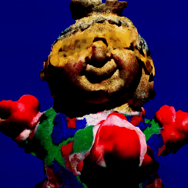 | 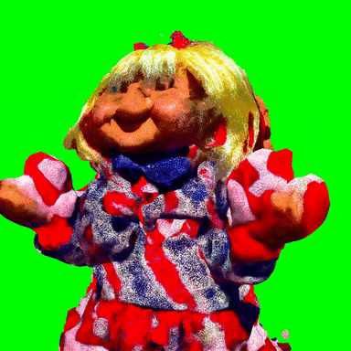 | 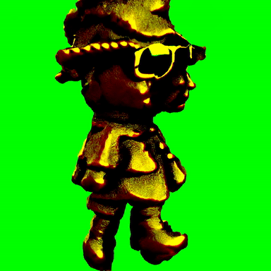 |
| a bronze statue of a sks doll wearing sunglasses | ||
| 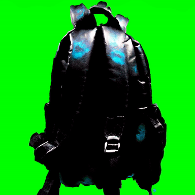 | 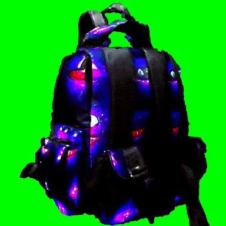 | 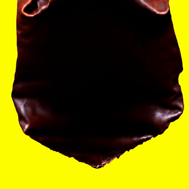 |
| a leather sks bag | ||
| 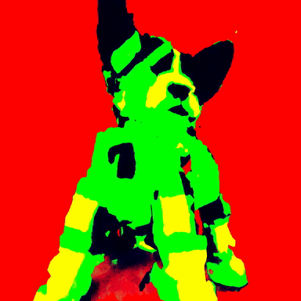 | 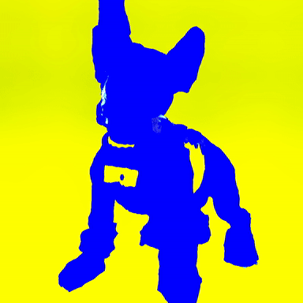 | 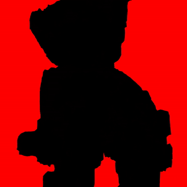 |
| a robot sks dog wearing a western hat | ||
| 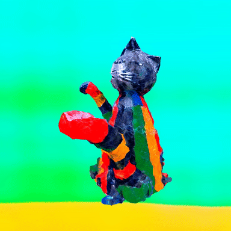 | 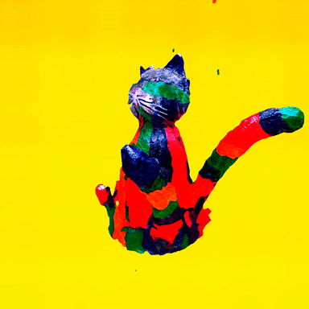 | 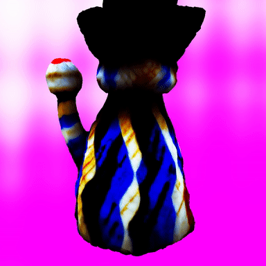 |
| a sks cat toy statue made of marble wearing a western hat | ||